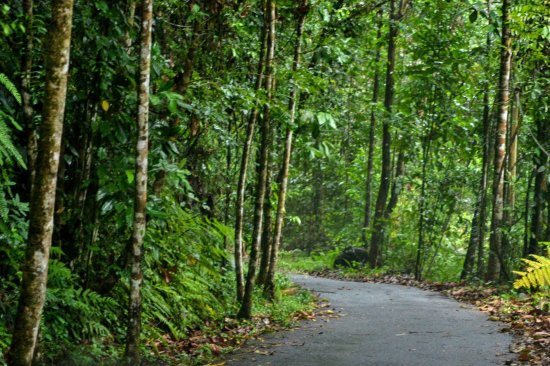
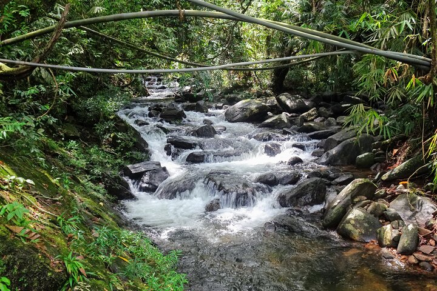

Key Attractions

Walk along lush rainforest trails filled with vibrant trees, endemic plants, and dense canopy.

Discover hidden waterfalls for a refreshing dip amid serene jungle surroundings.

Birdwatching paradise with exotic and endemic bird species found only in Sri Lanka.

Hike various forest trails with expert guides to learn about the rainforest ecosystem.

Enjoy serene forest streams and natural pools for relaxation and photography.